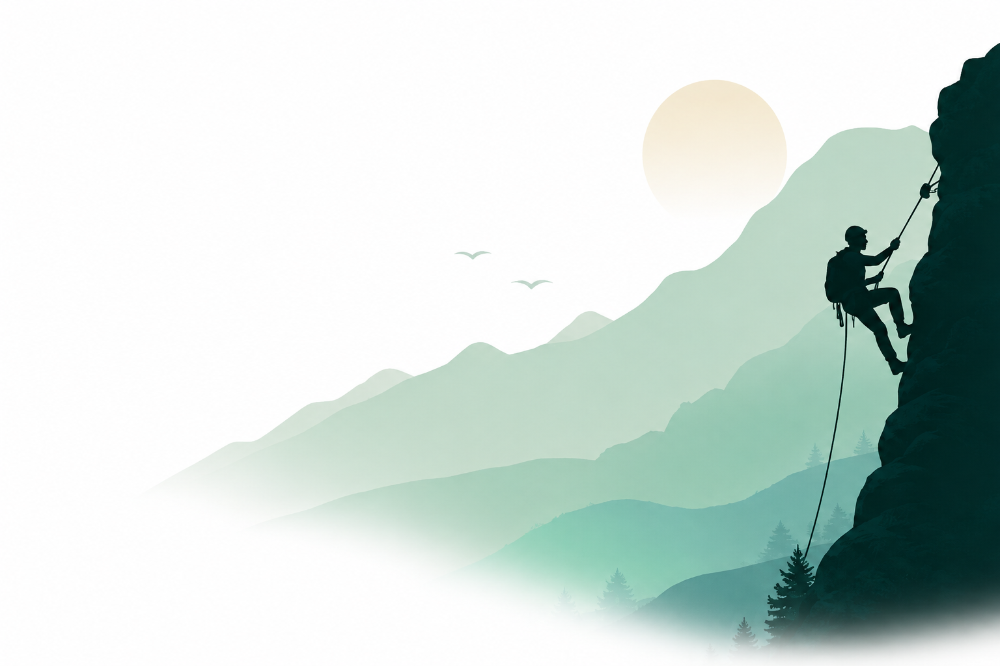
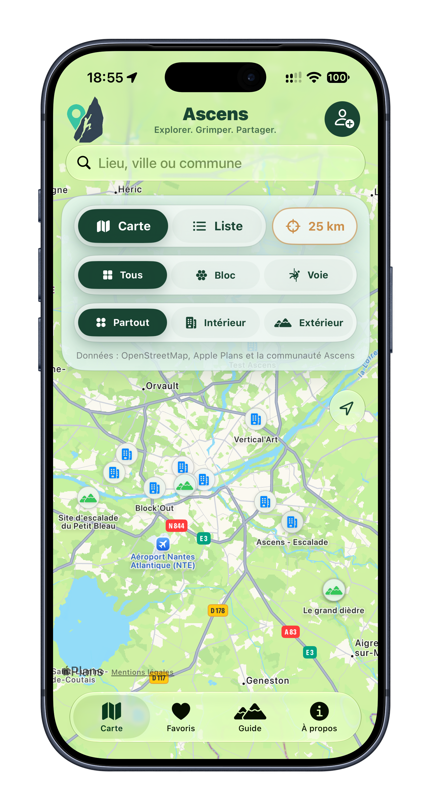

Carte interactive
Explorez les lieux d’escalade autour de vous, ou recherchez une ville partout en France.

L’application pour grimper local
Trouvez les salles, les blocs et les falaises qui vous donnent envie de grimper. Ascens rassemble les lieux utiles pour préparer votre prochaine sortie.

Tout pour choisir votre prochaine sortie
Que vous cherchiez une salle pour ce soir, un bloc pour le week-end ou une falaise à découvrir, Ascens vous aide à trouver le bon lieu, au bon moment.
Explorez les lieux d’escalade autour de vous, ou recherchez une ville partout en France.
Affinez par pratique — bloc ou voie —, par environnement et par distance.
Accès, horaires, cotations, approche, équipement, contacts et informations pratiques.
Gardez vos lieux préférés à portée de main pour décider plus vite de votre prochaine séance.
Ouvrez directement l’itinéraire vers le lieu choisi dans Apple Plans.
Les lieux déjà chargés restent consultables, même au pied de la falaise.
Une carte, vraiment pensée grimpe
Ascens rassemble des données d’OpenStreetMap, d’Apple Plans et de la communauté pour vous donner une vue claire des possibilités autour de vous.
Pour débuter, progresser, comprendre
Un guide clair accompagne chaque grimpeur : du choix du matériel aux cotations, des vérifications essentielles aux gestes de sécurité.
Une carte qui grandit avec vous
Proposez un lieu manquant ou complétez une fiche existante. Chaque contribution est relue avant publication, pour garder la carte utile à toute la communauté.
Télécharger sur l’App Store